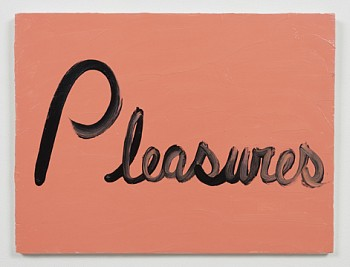

I can't tell you how I woke up but I can tell you how I want to live by Vida Beyer
I want to tell you something delicious and promising. I do believe in those things and I want to tease out the way they live inside of me. I want to ache in a way that's less sexy-sad, for you.
I am thinking of two summers ago when my sensuous and understanding friend told me that my recent heartbreak had left me beautiful, porous and crushable.
I want to be beautiful and porous with you.
I want to be like Ree Morton's "Signs of Love" the way the brush strokes scrape against the soft flesh of the flat colour canvas to read "Pleasures." Languid, perfect, lush.
I miss dancefloor hookups all the time now. I felt understood and so powerful in these kinds of wordless, sweaty negotiations.
I'm not very good at telling, I am better at showing. I am better at having a body in the dark, obscured from myself just enough to feel safe.
I am trying not to tell you too heavy a story in order to understand me but all the stories that gave me the deepest understandings of myself are wounds that feel too raw for now.
I want to be easy with you, I want to laugh and then I want you to laugh.
I don't want to be a stone, I want to be an ice cube, melting away ceaselessly against your warm skin.
